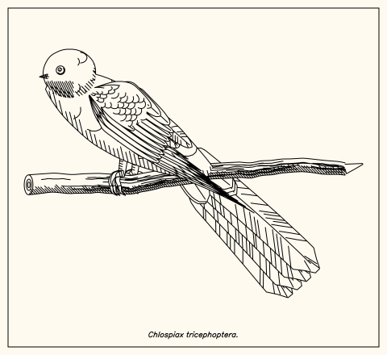
Chlospiax tricephoptera (355 ms)
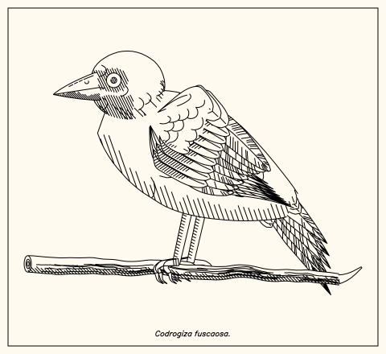
Codrogiza fuscaosa (236 ms)
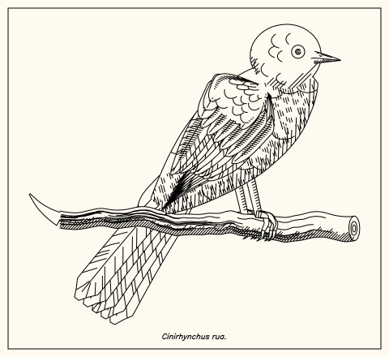
Cinirhynchus rua (646 ms)
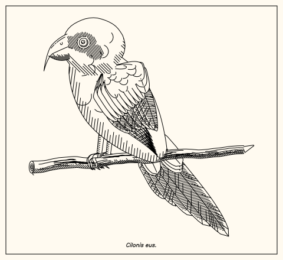
Cilonis eus (618 ms)
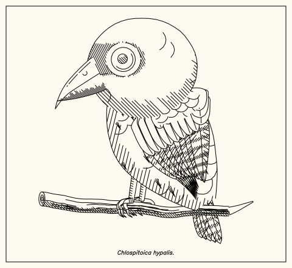
Chlospitoica hypalis (341 ms)
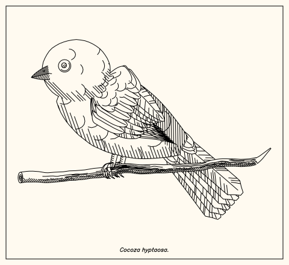
Cocoza hyptaosa (180 ms)
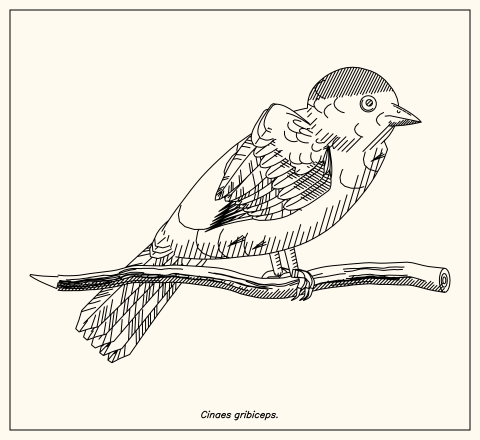
Cinaes gribiceps (141 ms)
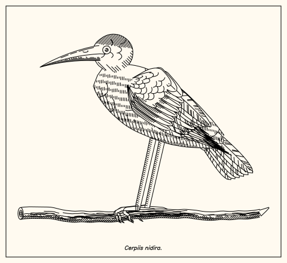
Cerpiis nidira (216 ms)
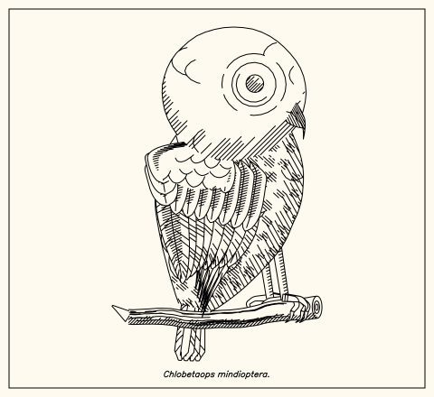
Chlobetaops mindioptera (1132 ms)
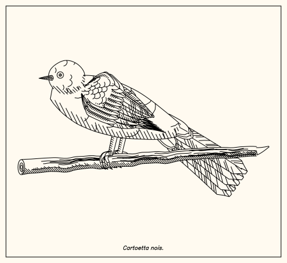
Cartoetta nois (260 ms)
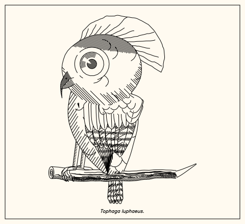
Tophaga luphaeus (357 ms)
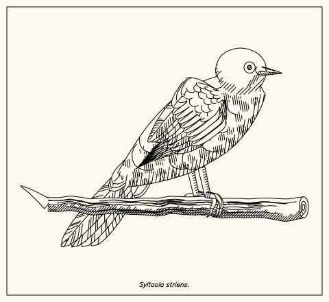
Syltaola striens (410 ms)
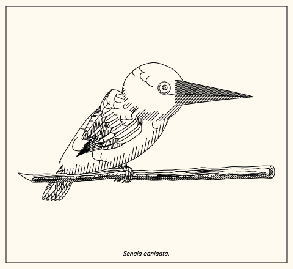
Senaia canlaata (227 ms)
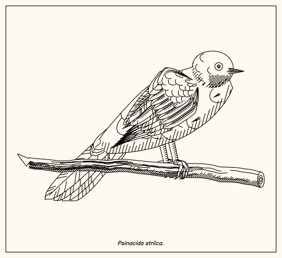
Psinacida striica (319 ms)
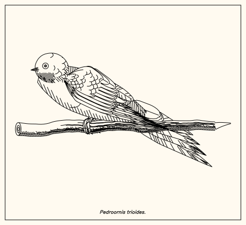
Pedroornis trioides (475 ms)
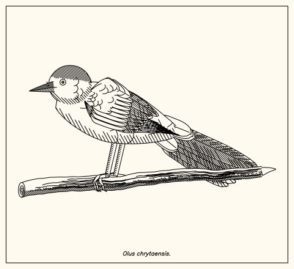
Olus chrytaensis (741 ms)
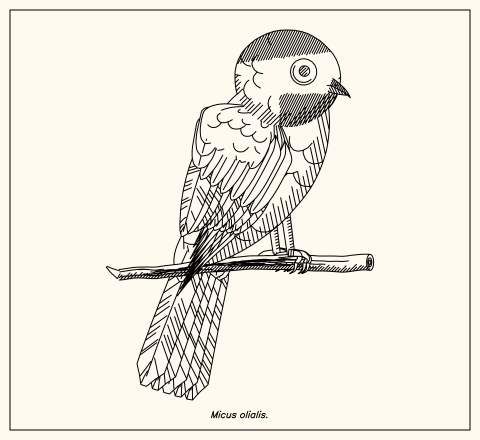
Micus olialis (571 ms)
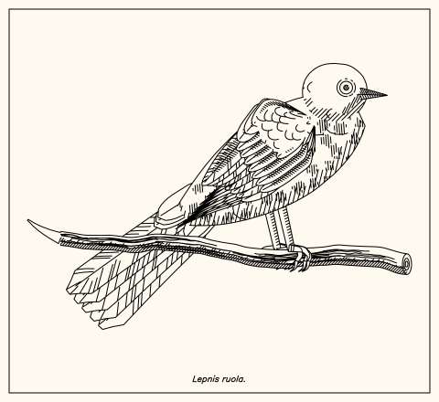
Lepnis ruola (717 ms)
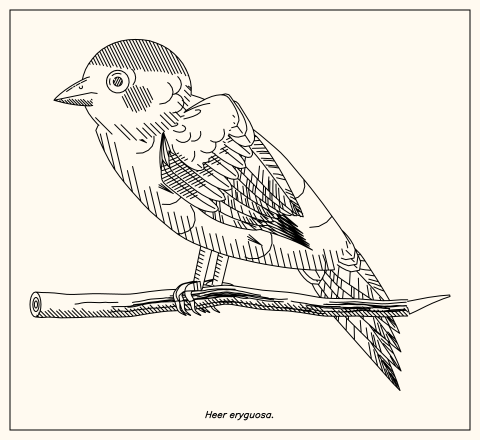
Heer eryguosa (253 ms)
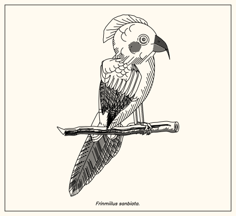
Frinmiilus sanbiata (424 ms)
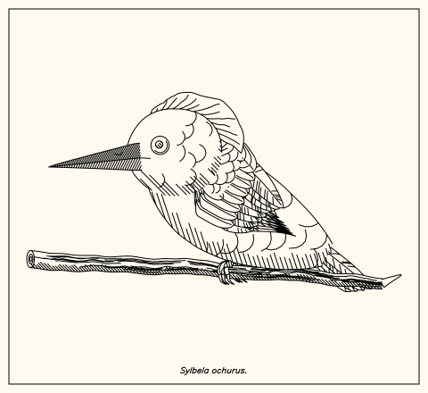
Sylbela ochurus (296 ms)
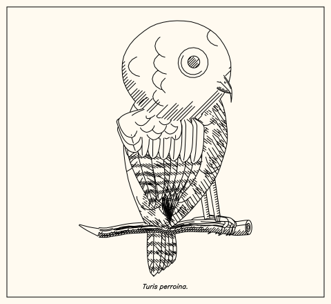
Turis perroina (571 ms)
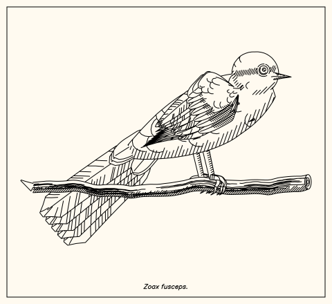
Zoax fusceps (306 ms)
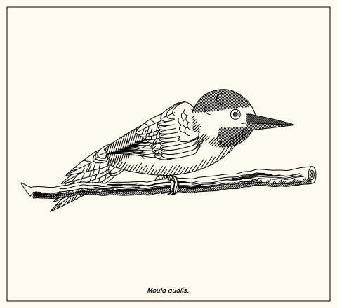
Moula aualis (404 ms)